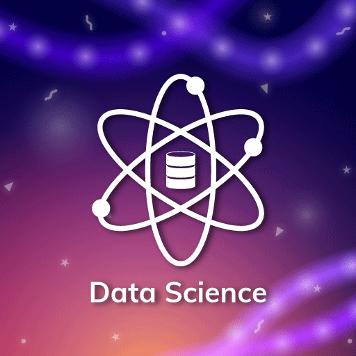

Data Science
Data science is an essential part of many industries today, given the massive amounts of data that are produced, and is one of the most debated topics in IT circles. Its popularity has grown over the years, and companies have started implementing data science techniques to grow their business and increase customer satisfaction. Data science is the domain of study that deals with vast volumes of data using modern tools and techniques to find unseen patterns, derive meaningful information, and make business decisions. Data science uses complex machine learning algorithms to build predictive models. The data used for analysis can come from many different sources and presented in various formats. In this article, we’ll learn what data science is, and how you can become a data scientist.
The data science lifecycle involves various roles, tools, and processes, which enables analysts to glean actionable insights. Typically, a data science project undergoes the following stages:.
Data ingestion
The lifecycle begins with the data collection--both raw structured and unstructured data from all relevant sources using a variety of methods. These methods can include manual entry, web scraping, and real-time streaming data from systems and devices. Data sources can include structured data, such as customer data, along with unstructured data like log files, video, audio, pictures, the Internet of Things (IoT), social media, and more..
Data storage and data processing
Since data can have different formats and structures, companies need to consider different storage systems based on the type of data that needs to be captured. Data management teams help to set standards around data storage and structure, which facilitate workflows around analytics, machine learning and deep learning models. This stage includes cleaning data, deduplicating, transforming and combining the data using ETL (extract, transform, load) jobs or other data integration technologies. This data preparation is essential for promoting data quality before loading into a data warehouse, data lake, or other repository..
Data analysis
Here, data scientists conduct an exploratory data analysis to examine biases, patterns, ranges, and distributions of values within the data. This data analytics exploration drives hypothesis generation for a/b testing. It also allows analysts to determine the data’s relevance for use within modeling efforts for predictive analytics, machine learning, and/or deep learning. Depending on a model’s accuracy, organizations can become reliant on these insights for business decision making, allowing them to drive more scalability.
Communicate
Finally, insights are presented as reports and other data visualizations that make the insights—and their impact on business—easier for business analysts and other decision-makers to understand. A data science programming language such as R or Python includes components for generating visualizations; alternately, data scientists can use dedicated visualization tools..
Data Science Prerequisites
Here are some of the technical concepts you should know about before starting to learn what is data science.
1. Machine Learning
Machine learning is the backbone of data science. Data Scientists need to have a solid grasp of ML in addition to basic knowledge of statistics.2. Modeling
Mathematical models enable you to make quick calculations and predictions based on what you already know about the data. Modeling is also a part of Machine Learning and involves identifying which algorithm is the most suitable to solve a given problem and how to train these models.3. Statistics
Statistics are at the core of data science. A sturdy handle on statistics can help you extract more intelligence and obtain more meaningful results.4. Programming
Some level of programming is required to execute a successful data science project. The most common programming languages are Python, and R. Python is especially popular because it’s easy to learn, and it supports multiple libraries for data science and ML.5. Database
A capable data scientist needs to understand how databases work, how to manage them, and how to extract data from them.Lets quote!!!
"Data science is a combination of three things: quantitative analysis (for the rigor required to understand your data), programming (to process your data and act on your insights), and narrative (to help people comprehend what the data means)." — Darshan Somashekar.
Briefs
Data Science Tools
- Data Analysis: SAS, Jupyter, R Studio, MATLAB, Excel.
- Data Warehousing: Informatica/ Talend, AWS Redshif.
- Data Visualization: Jupyter, Tableau, Cognos, PowerBi.
- Machine Learning: Spark MLib, Mahout, Azure ML studio.
Applications of Data Science
- 1. Healthcare.
- 2. Gaming.
- 3. Image Recognition.
- 4. Recommendation Systems.
- 5. Logistics.
- 6. Fraud Detection.
- 7. Internet Search.
- 8. Speech recognition.
- 9. Targeted Advertising.
- 10. Airline Route Planning.

WANT TO KNOW MORE?
 Why Become a Data Scientist?
You learnt what is data science. Did it sound exciting? Here's another solid reason why you should pursue data science as your work-field. According to Glassdoor and Forbes, demand for data scientists will increase by 28 percent by 2026, which speaks of the profession’s durability and longevity, so if you want a secure career, data science offers you that chance. So, if you’re looking for an exciting career that offers stability and generous compensation, then look no further! Read more: Data Scientist Salary In India and US What Does a Data Scientist Do? You know what is data science, and you must be wondering what exactly is this job role like - here's the answer. A data scientist analyzes business data to extract meaningful insights. In other words, a data scientist solves business problems through a series of steps, including: Before tackling the data collection and analysis, the data scientist determines the problem by asking the right questions and gaining understanding. The data scientist then determines the correct set of variables and data sets. The data scientist gathers structured and unstructured data from many disparate sources—enterprise data, public data, etc. Once the data is collected, the data scientist processes the raw data and converts it into a format suitable for analysis. This involves cleaning and validating the data to guarantee uniformity, completeness, and accuracy. After the data has been rendered into a usable form, it’s fed into the analytic system—ML algorithm or a statistical model. This is where the data scientists analyze and identify patterns and trends. When the data has been completely rendered, the data scientist interprets the data to find opportunities and solutions. The data scientists finish the task by preparing the results and insights to share with the appropriate stakeholders and communicating the results.